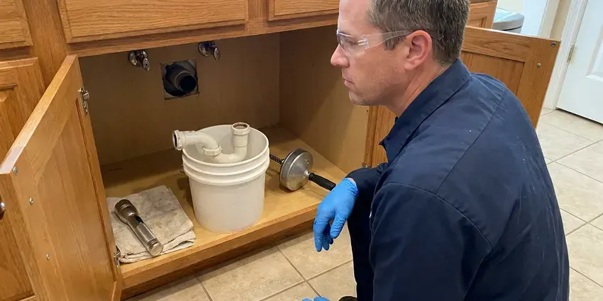

Sewer Cleaning in Hemet, CA
FKM Plumbing offers top-tier sewer cleaning throughout Hemet, CA. We tackle everything from minor clogs to major blockages in your main sewer line.
- Licensed and Insured Crew
- Fast, Reliable Service
- Root Cutting and Jetting
- Prompt, Effective Service

Clear Your Main Sewer Line and Use Your Plumbing Again in Hemet, CA.
Our skilled technicians are ready to tackle any sewer problem, so your system works smoothly.
Reliable Sewer Cleaning Solutions for Hemet, CA Homes
FKM Plumbing sees the same sewer problems again and again: roots in clay joints, scale and channeling in cast iron, and grease buildup in lines that run flat under slabs. We clear the blockage, run a camera, and give you a straight answer on the condition of your pipe.
Our expertise includes:
- High-pressure hydro jetting for stubborn clogs
- Preventative maintenance to lengthen sewer life
- Sectional cable machines with root saws and blade cutters

Additional Drain Services Services in Hemet, CA
From stubborn kitchen clogs to main sewer backups, our drain services in Hemet, CA restore full flow fast and keep it that way.




Drain Unblocking in Hemet

Customers
Why Choose FKM Plumbing for Sewer Cleaning in Hemet, CA?
A clogged sewer line can fast become a major headache, leading to foul odors and wastewater backups inside your home. Our sewer cleaning protects your property and keeps your plumbing system running smoothly.
- Cleanup Included, We help contain and clean the backup area so your home is livable again quickly.
- Experienced Technicians, Our team is highly trained in identifying and resolving all types of sewer line blockages, from simple clogs to complex issues.
- Advanced Equipment, We rely on modern diagnostic cameras and high-pressure hydro jetting tools for precise and effective cleaning.
Citywide Coverage
FKM Plumbing is proud to serve every neighborhood in Hemet, so no matter where you are, expert sewer cleaning is just a call away. We understand the plumbing challenges faced by homes throughout Hemet.
Experienced Team
Every sewer tech is trained on jetting, cable work and camera locating. They explain the video in plain language and give options from routine maintenance to complete repair.
Safety-First Approach
Safety is our top priority during every sewer cleaning job. We follow all local Hemet and Southern California plumbing codes and industry best practices to protect your property and our team.
Trusted Certified Hemet Plumbing Services Professionals
At FKM Plumbing, we take pride in providing certified plumbing services throughout Hemet, CA. Backed by recognized industry credentials, our experienced plumbers combine technical skill with genuine customer care. Whether it is repair, installation, or maintenance, we follow strict safety and quality standards to deliver long-lasting results you can trust.
Call Us Now PHCC Plumbing Contractor Recognition
PHCC Plumbing Contractor Recognition Better Business Bureau (BBB) Accreditation
Better Business Bureau (BBB) Accreditation Angi Certified Pro
Angi Certified Pro ISO 9001 Quality Management Certification
ISO 9001 Quality Management CertificationTrusted Sewer Cleaning Services in Hemet, CA
Sewer Cleanout Installation in Hemet
Some homes have no accessible cleanout, which forces techs to pull a toilet or go through a roof vent. We can install a two-way cleanout near the foundation so the line can be cleaned from either direction. This makes every future cleaning quicker and cheaper. It also gives a clear access point for camera inspections. Cleanout installation is done to local code with any needed permit.

Root Removal From Sewer Lines in Hemet
Trees and shrubs send roots toward any moisture they can find, and a sewer joint is a steady source during dry months. Thirsty yard trees and shrubs are common culprits in local yards. We use a sectional cable with a root saw sized to the pipe to cut the mass free and pull it out. Heavy root growth may need a follow-up with a jetter to clear fine root hairs. A camera inspection then shows where roots are entering so you can decide on lining or repair.
Hydro Jetting for Sewer Lines in Hemet
For the most stubborn sewer line clogs, hydro jetting is the gold standard. This powerful technique uses high-pressure water streams to blast away grease, scale, mineral buildup, and even tree roots from the interior walls of your sewer pipes. FKM Plumbing uses professional hydro jetting equipment for sewer cleaning in Hemet, delivering a thorough cleaning that leaves your pipes virtually spotless, greatly reducing the chance of future blockages and extending the life of your sewer system.
Main Sewer Line Clearing in Hemet
The main sewer line is crucial for carrying wastewater away from your home. Blockages in this line can cause whole-house backups affecting all fixtures. We use powerful augers and specialized cutting tools to clear roots, grease, and other debris that commonly obstruct main sewer lines, especially in older homes around Hemet.
Commercial Sewer Cleaning in Hemet, CA
Commercial properties in Hemet, CA often face more demanding sewer system usage, leading to frequent clogs from various sources. Restaurants, for example, deal with significant grease accumulation, while other businesses might have issues from foreign objects. FKM Plumbing provides heavy-duty commercial sewer cleaning, using hydro jetting equipment capable of clearing large diameter pipes and tough commercial-grade blockages quickly, minimizing downtime for your business.
Sewer Camera Inspections in Hemet, CA
Before any major sewer cleaning, especially for recurring issues, a sewer camera inspection is essential. FKM Plumbing uses waterproof cameras to travel through your sewer lines, providing a live view of the pipe's interior. This lets us precisely locate the exact cause and position of a blockage, identify pipe damage like cracks or collapses, and choose the most effective cleaning method, saving time and preventing unnecessary digging in Hemet, CA.
Tree Root Removal in Hemet, CA Sewers
Tree roots are a common culprit of sewer line blockages, especially in Hemet, CA neighborhoods where mature trees are common. Roots seek out moisture and can infiltrate even tiny cracks in sewer pipes, growing and eventually blocking the entire line. FKM Plumbing uses dedicated root cutting tools attached to our drain augers and high-pressure hydro jetting to remove these invasive roots, restoring flow and preventing further damage. We can also advise on long-term solutions to protect your pipes.

Clay and Orangeburg Sewer Lines in Hemet
Older properties may still have vitrified clay or even Orangeburg fiber pipe running to the street. Clay joints are open invitations for roots, and Orangeburg can flatten under soil weight. We clean these lines gently and use the camera to map joints and soft spots. If the pipe is failing, we will tell you plainly and show the footage. Cleaning keeps you running while you budget for a replacement.
Sewer Line Cleaning Near Me in Hemet, CA
When you search for sewer cleaning near me in Hemet, you want a local company that gets your needs. FKM Plumbing is your neighborhood expert, providing fast and dependable service. We are familiar with the local plumbing infrastructure and common issues affecting homes in Southern California.
Local experience matters because soil, tree types and pipe materials vary by neighborhood. We know which areas have older clay laterals and which have newer PVC. That knowledge helps us work faster and recommend the right long-term fix.
FKM Plumbing at a Glance
- Licensed and insured plumbers serving Hemet, CA
- Same-day appointments and 24/7 emergency response
- Clear written estimates, no hidden fees
- 4.8-star rated by 754+ Southern California customers
Hemet Map
Hemet Information
- Population
- 92,368
- Area codes
- 951/760/909
- Service area
- Hemet and communities within 40 miles
- Nearby
- Menifee, Perris, Murrieta, Moreno Valley
Tree root intrusion is a serious concern for sewer lines in Hemet, CA, making regular and professional sewer cleaning crucial for home maintenance. Intense sun breaks down exposed plastic pipe, sprinkler parts, and exterior fittings, so they wear out faster than indoor plumbing.
Expert Services
Trust our professionals for reliable FKM Plumbing solutions in Hemet, CA.
Our Specialized Plumbing Services in Hemet, CA
At FKM Plumbing, we provide a complete range of plumbing services across Hemet, CA. From leak detection to full system installations, our team ensures fast, precise, and affordable service for both residential and commercial properties. Explore our core services below:


How Our Sewer Cleaning Process Works in Hemet, CA
Here is how we take your sewer from backed up to flowing, with no surprises at any step.
Request a Quote
Call (213) 871-0701 and describe which fixtures are backing up and when it started. We give you a price range and dispatch a tech with main line equipment.
Locate and Clear
We find your cleanout or best access point and run the right cable or jetter. Roots and debris are cut and removed until the line flows freely.
Inspect and Report
A camera run confirms the line is clean and checks for damage. You get the findings and our advice before we leave.
Frequently Asked Questions About Sewer Cleaning in Hemet
Main sewer cleaning in Hemet usually costs $200 to $500 with a cable machine from an accessible cleanout. Hydro jetting a sewer line typically runs $400 to $900, and a camera inspection adds about $150 to $350.
Routine sewer cleaning usually does not require a permit in Hemet, CA. However, if the cleaning reveals significant damage that requires excavation or major repair work, then permits may be necessary. Our team will tell you about any permit requirements.
In most cases the homeowner owns the lateral from the house to the city main or property line. Your city utility can tell you where its responsibility begins.
While minor drain clogs can sometimes be handled with DIY solutions, main sewer line blockages require professional tools and expertise. Trying to clear a sewer line without proper equipment can worsen the problem or damage your pipes.
Cleaning does not require a permit. Installing a cleanout or repairing the sewer typically does, and we handle that paperwork.
Usually, standard home insurance policies do not cover routine sewer cleaning or damage from gradual wear and tear. However, if a sudden, unexpected event causes sewer damage, it might be covered. It is best to check with your insurance provider directly.
Multiple slow drains, toilets that gurgle when a sink drains, and water coming up in the tub or shower are common signs. Sewer odors in the yard or a soggy spot near the cleanout can also point to a problem.
Homes with no issues may never need it. Lines with known roots or grease buildup often do well with cleaning every 12 to 24 months.
What People Are Saying About Our Plumbing Experts?

Daniel K.
A pipe burst at 11 pm and they actually answered. The plumber showed up within the hour, shut everything down, and had us back to normal the next morning. Could not ask for more.
Emergency Plumbing · Moreno Valley, CA
Mark T.
When our office needed drain cleaning, FKM Plumbing provided quick, reliable service. The plumber arrived on time and made sure every drain flowed perfectly before leaving. Very satisfied.
Drain Cleaning · Temecula, CA
Sofia M.
Two new toilets installed in one visit, no mess left behind, and the tech even adjusted a faucet he noticed was dripping. Fair pricing and really friendly.
Toilet Installation · Moreno Valley, CALaura S.
I scheduled a water heater replacement, and the team made the process smooth and affordable. The new unit works perfectly, and they cleaned up after completing the job.
Water Heater Replacement · Hemet, CA
Emily R.
I called FKM Plumbing for plumbing repair, and the technician was fast, polite, and thorough. They explained the problem clearly and fixed it the same day. I will definitely hire them again. Highly recommended!
Plumbing Repair · Moreno Valley, CA
Robert G.
The trenchless sewer replacement saved our front yard. They walked us through the camera inspection footage first so we knew exactly what we were paying for.
Sewer Line Replacement · Perris, CA